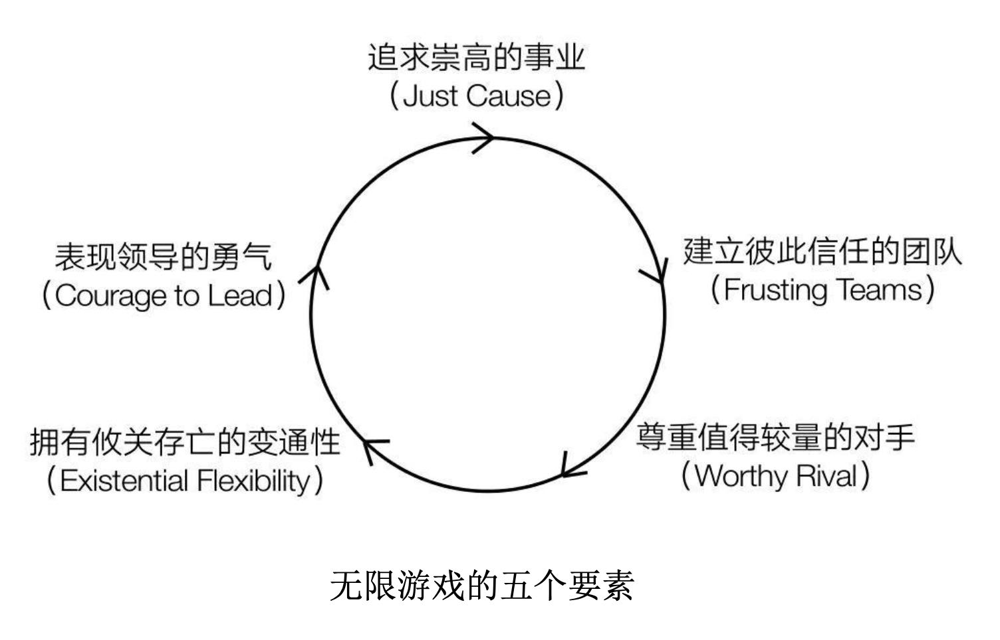

无限的游戏(The Infinite Game)
这个作者就是就是我很早之前看过the golden circle的作者 Simon Sinek - The Golden Circle - TedTalks 2009 - YouTube
https://book.douban.com/subject/34632339//
有限思维的领导者会用公司的业绩来证明自己职业生涯的 价值，而无限思维的领导者会用自己的职业生涯来提升公司的 长期价值。在这些价值中，仅有一部分可以用金钱来衡量。这 场游戏并不会因为鲍尔默的退休而结束。没有他，微软仍将继 续玩下去。在这场无限游戏中，鲍尔默究竟对公司的财务状况 做了多大贡献其实并不重要，真正重要的是他是否帮公司做好了充足的文化准备，让公司能够在下一个13年、33年或300年中 继续存续并繁荣下去。若按照这个标准评估，鲍尔默输了。
在商业的无限游戏中，领导者若是坚持有限思维的模式， 或者过度执着于有限的目标，那么在某个时间段内，根据某个 衡量标准，他们或许能够达成“第一”的目标。但这并不意味 着他们所做之事一定有利于企业在长久游戏中不被淘汰。事实 上，更常见的情况是，这样的决策不仅有损于公司的内部运作，而且若不加以干涉，还会加速公司的灭亡。
若想运用无限思维来领导团队，就必须做到下图中的五点。如果我们选中了某个健康计划，可以选择只听从其中的部 分而非全部建议，比如，积极锻炼，但不吃蔬菜。这样做，我 们或许能享受该计划所带来的部分益处，但若想获得全部的益 处，就必须全部照做。同理，无限思维的上述要点，你只做到 一部分确实也能获益，但若想让一个组织具备在无限游戏中长 久、健康发展下去的能力，就必须无一遗漏地做到所有。

在通用电气的员工大会上，一些员工常会表达出对公司过于关注短期目标的担忧。前首席执行官杰克·韦尔奇(Jack Welch)喜欢这样回答:“长期就是一系列的短期而已。”当员工表达出这样的担忧时，他们真正想问的可能是:“我们所做的这一切究竟是为了什么?”我们所有的努力除了满足业绩要求、获得物质奖励，还有什么贡献?韦尔奇的回答表明，在他 执行、执行、再执行。对韦尔奇来说，能把每一个有限目标都 看来，没有比这些更伟大的事业要追求了。目标很简单，就是完成就足够了。但是，商业是一场无限的游戏，这意味着一系列的短期目标会不断叠加下去，永远不会有结束。
“成为最好的”完全不可能成为崇高的事业，即使我们现在是最好的(基于我们自己选择的衡量标准和时间段)，这个地位也只是暂时的。即使成为最好的，游戏也不会结束。正因 而开始一味防守。如果你只是想为组建一支团队而要准备一场 为游戏仍将继续，我们常常会因为太在意、太想保住这一排名振奋人心的演讲，那么“我们是最好的”会是不错的演讲素 了。无限思维的领导者明白“最好”不是一种永恒的状态。因 材，但若是要将它作为整个企业的创立之基，就太不堪一击此，他们会努力做到“更好”。“更好”意味着这将是一段持 贡献才华与精力。在无限游戏中，“更好”优于“最好”。 续改进的旅程，也能让我们觉得，它是在邀请我们为它的进步贡献才华与精力。
金钱是推动事业发展的燃料，但并非事业本身，增长是为 了让我们拥有更多推动事业发展的燃料。正如我们买车的目的 不是为了买更多的汽油，企业必须具备比赚钱能力更大的价 值。一家企业就像一辆汽车，对于选择了它的人来说，只有当 它能送我们去的目的地是没有它我们就无法抵达的地方，它才 具有更大的价值。所设想的目的地就是崇高的事业。
直到1970年弗里德曼的那篇文章发表，高管和董事才开始认为自己应对企业的“所有者”，即股东负责，而不是服务于某个更伟大的目标。这一观念在20世纪八九十年代越来越盛行，上市公司与银行内部的激励机制也越来越过度地关注短期收益，这些收益也越来越向着少数人集中。也是在此期间，为了实现主观制定的目标，每年一轮的大规模裁员首次成为广为接受的战略之一。而在20世纪80年代以前，这种做法根本就不存在。当时，在一家公司工作一辈子是很平常的事。公司会照顾员工，员工也会照顾公司，信任、自豪和忠诚都是双向的。而现在，我们往往会在远不到退休的年纪时就主动或被动地离开公司。
正如亨利·福特(Henry Ford)所言:“一个只会赚钱 的企业是一个糟糕的企业。” 企业的存在是为了推动某些东 西的发展——技术、生活质量，以及任何可能以某种方式、形 式或形态改善生活的东西。人们若愿意付钱购买一家企业的东 西，说明人们能够从这些东西中感知到或获取到某种价值。这 意味着，一家企业提供的价值越高，能赚到的钱就越多，就有 越多“燃料”支撑其进一步发展。资本主义不仅关乎繁荣(以 特点、利益、金钱来衡量)，也关乎进步(以生活质量、科技 进步，以及人类彼此和平共处、携手合作的能力来衡量)。
自20世纪70年代末以来的不断滥用，给我们留下了一个破败不堪的资本主义。这是已经退化的资本主义，它服务于为一己之私滥用该制度的少数人，只为让这些人获得更大的利益，这对发挥资本主义哲学的真正优势毫无帮助(遍及全球的反资本主义运动与保护主义运动就是明证)。事实上，整个股东至上理论，以及弗里德曼对企业责任的定义，都是由投资者自己提出来的，只是投资者的工具，目的是激励高管把保护投资者的有限利益放在首位。
其实，人人都希望自己的工作和生活是有意义的，这是人 之所以为人的本质。我们都希望参与比自身更伟大的事业。我 不得不认为，正是因为这一点，许多公司才会在将高管与股东 视为真正的主要服务对象时，仍然声称自己主要服务于员工和 客户。许多人其实都能感觉出现代的资本主义形态与我们的价值观是不相符的，哪怕他们找不到恰当的语言来描述。若我们真的都接受了弗里德曼对企业的定义，那么企业就会视利润的最大化为唯一的愿景和使命，我们也都不会因此而有所不满，但企业并没有这么做。如果企业的真正目的只有赚钱，那么就不会有那么多公司假装自己在追求更伟大的事业或目标。声称企业的存在是为了实现更伟大的目标与真正打造一个这样的企业，完全是两码事。在无限游戏中，这些策略中只有一个是真正有价值的。
与任何对现状的挑战一样，要求抛弃弗里德曼企业观的呼 声既可以来自员工，也可以来自领导者，既可以来自外部，也 可以来自内部。请留心我们周遭的红色危险信号。在世界许多 地方，民粹主义的声音正越来越大。无论在商界还是政界，所 有的掌权者都有能力实现变革。不过，别搞错了，无论他们行 不行动，变革都已在来的路上。因为这就是无限游戏的原理。 有限的体系终有一天会耗尽所有的意志与资源，这一天总会来 的。尽管某些人可能积攒了大量的金钱或权力，但这也只是暂 时的，这个体系是无法自承其重的，终会分崩离析。如果说历史与几乎每一次的股市崩盘都在设法告诉我们一些什么，那就是，失衡才是最棘手的问题。
四季酒店的工作让诺亚发挥出了最佳的水平，这正是每个 领导者对自己员工的期望。正因如此，才会有那么多的领导 者，甚至包括一些最善意的领导者，常常问:“我该怎样做才 能让我的员工发挥最大的价值?”但这个问题问错了。因为它 问的不是该如何帮员工成长得更强大，而是该如何更多地榨取 他们的价值。人不是待拧干的湿毛巾，员工也不是可以让我们 将最后一点儿价值都榨个一干二净的物品。用这个问题得到的 答案，或许能在短时间内提高产出，但从长远来看，这是以牺 牲员工和文化为代价的。这样的方式永远无法让诺亚感受到他 在四季酒店所感受到的那份爱与投入。更好的问法是:“我该 如何创造出能让员工主动发挥出最佳水平的环境?”
高管们的沉默是有原因的，他们非常恐惧。穆拉利的前任 首席执行官经常会痛骂、羞辱或解雇那些说了逆耳之言的人。 人们习得的是能为自己带来奖励的行为，为了保护自己不被首 席执行官责罚，这些高管已经条件反射地选择了隐瞒有问题的 地方，或隐瞒未能达到的财务目标。穆拉利说他想要的是诚实 和责任感，但这话完全没用，在让高管们产生安全感之前，他 是得不到他想要的诚实与责任感的。尽管愤世嫉俗者认为，不 应该将私人情绪带入工作之中，但这一屋子都是大公司的高 管，事实证明就连他们也会因为恐惧而不愿向首席执行官说出 真相。但穆拉利很坚持。
无论哪个行业，领导者若给员工施加过大的数字指标压 力，采用失衡的激励机制，就有可能创造出这样一种环境:优 先考虑短期的业绩和资源，导致业绩、信任、心理安全感和员 工意志的长期下降。这在警界是真理，在商界也是真理。如果 从事客服工作的员工压力过大，他们就更有可能给客户带去糟 糕的服务体验。情绪会影响工作方式，这是早就众所周知的 事。如果工作的环境会让人们产生恐惧——害怕陷入麻烦、害 怕被羞辱或害怕被解雇，人们就会觉得自己需要用谎言、隐瞒 和弄虚作假来掩饰自己的焦虑、错误或在培训上与他人之间的 差距，这样的环境会从根本上阻碍人们建立信任。在警界，该 影响可能造成的结果会比糟糕的客户服务严重得多。
在脆弱的文化中，人们依靠规则获取安全感。这就是官僚 主义者出现的原因。官僚主义者相信，只要严格遵守规则，他们就能保住工作。在此过程中，他们会做出有损组织内外信任的行为。而在强大的文化中，人们依靠与他人间的关系来获取安全感。良好的人际关系是团队高效运转的基础。所有高业绩团队的产生都是从信任开始的。
海军陆战队感兴趣的并不是领导者能否穿越水障碍区，或 能否完成其他任何障碍挑战。他们感兴趣的是让领导者习得这 样一种能力:创造一个良好的环境，让所有成员都能彼此信 任，从而携手合作，克服障碍。海军陆战队的士兵都知道，以 信任为基石的领导氛围才是能让他们成功多于失败的保证。我将在本书中不止一次地提到这样一句话:领导者的负责 对象不是结果，而是那些对结果负责的人。在一个组织中，提 高业绩的最佳方法就是创造一个良好的环境，让信息可以自由 流动，错误可以高亮展示，帮助可以有来有往。简言之，就是 能让成员在团队中感到安全。这是领导者的职责。
理性思考的能力既是上天对我们的恩赐，也是上天对我们的诅咒。我们一直在设法理解周遭的世界，理解复杂的方程式，也具备自省的能力。正是有了理性思考和分析的能力，我们才能解决难题并发明出更先进的技术。不过在得知自己的行为违反了一些根深蒂固的道德准则时，我们也可以利用自己的分析思维能力来正当化自己的行为，或为自己的行为辩解，从而减轻可能因此而产生的罪恶感。这就像从一个有钱的朋友那里偷了东西，却告诉自己“他们根本注意不到的。再说了，他们也不缺这点钱，再买一个就是了”。我们可以用任何借口来合理化这一行为，却改变不了偷东西的事实。当这种合理化在一个组织内司空见惯时，雪球就会越滚越大，直到整个组织都充斥着不道德的行为，极端情况下，还会导致腐败。
一旦发现存在问题、错误、不道德的决策或业绩增长缓慢 的情况，懒惰的领导会努力用程序来解决问题，而不是为员工 提供支持。毕竟程序是客观、可靠的，信任程序比信任人更容易，至少我们目前是这么认为的。伦纳德·王指出，事实上，“程序告诉我们的总是我们想听到的”。 程序会给我们开绿灯，但或许不会告诉我们真相。当领导者用程序取代判断时，就会为道德的堕落创造条件，哪怕是在那些会让人们坚持更高道德与伦理标准的文化中。
治疗和预防道德堕落的最佳良药就是无限思维。领导者如 果能为下属提供一项崇高的事业，并给他们一个可以与彼此信 任的团队合作推进该事业的机会，就能形成良好的文化，在这 种文化中，人们既会努力实现短期目标，也会同时考虑到自己 为实现目标所做的决策是否合乎伦理道德，是否会造成更广泛 的影响。这么做不是因为有规定，不是因为检查清单上有这些内容，也不是因为上了公司关于“做事要遵守道德准则”的在 线课程。他们这样做是因为理当如此。我们不做有违道德的 事，因为我们不希望自己的行为会阻碍崇高的事业的推进。当 我们感觉自己身处一个彼此信任的团队中时，我们不想让队友 失望。我们觉得自己要对团队负责，要对组织的声誉负责，而 不仅仅是对自己和个人的野心负责。当我们觉得团队关心我们 时，就会希望代表团队做正确的事，让领导者感到自豪。我们 的标准自然就会随之提高。
在那一刻，我突然明白了自己为什么那么想赢他。我对他 的看法与他无关，而与我自己有关。每当他的名字出现时，总 会让我想起自己的短处。相比将自己的精力投入于自我提升 ——克服弱点或增强优势，把注意力放在打败他上要更容易一 些。竞争就是这样，不是吗?它会驱使我们争胜。问题是，所 有衡量谁领先、谁落后的标准都是主观的，是我自己设置了比 较的标准。此外，这场竞争是没有终点的，我一直想赢的其实 是一场赢不了的竞赛。我犯了一个典型的有限思维错误。事实 上，尽管我们做着类似的工作，但他并不是我的竞争者，而是 我值得较量的对手。
之所以说需要调整自己的视角，将自己领域中的强者视为 值得较量的对手，还有一个原因，就是这种思维方式能让我们 保持诚实。这就像一个一心只想赢的跑者，他会忘了规则，甚 至忘了道德，忘了他开始跑步的初衷。他可能会将时间、精力 花在影响比自己快的跑者上，比如绊倒对方。或者，他可能会 服用能提高成绩的药物，偷偷地给自己增加优势。这两种策略 无疑都会增加他赢得比赛的概率，但也会减小他在这些比赛之 外获得成功的概率。而且，这些策略终会有不再管用的一天， 到那时，他仍将是那个跑得不如对手快的跑者。若我们能将其 他玩家视为值得较量的对手，就不会再有必须不惜一切赢得比 赛的压力，如此一来，我们自然也不那么需要做出不道德或非 法的行为了。当坚持我们所践行的价值观比得分更重要时，我 们自然会变得更诚实(那些在“做正确的事”与“做有助于自己领先的事”之间选择了前者的组织或政治家就是很好的例子)。
穆拉利加入福特后做的第一件事情就是，每晚驾驶一辆不 同型号的福特汽车回家。在试遍公司的每一款汽车后，他要求 换开一辆丰田凯美瑞回家。但问题是，福特连一辆能让他开的 凯美瑞都没有。在福特公司，购买其他制造商的汽车是一种常 规操作，但工程师会将那些汽车完全拆解，用以研究它们的制 造方式，至于真正可供驾驶的——一辆都没有。现在想一想， 一家苦于销售汽车的大型车企，高管们竟然几乎完全不知道别 人家的车开起来是什么样的感觉。如果购车者是通过试驾来做 选择的，那么福特的高管们难道不应该知道购车者都在试些什 么车吗?穆拉利让福特大批采购了其他制造商的汽车，并要求 高管试驾。
穆拉利在说雷克萨斯是世界上最好的汽车时，并不是想要 让福特人难过，而只是给他们提供了一个值得较量的对手。他 相信，要救福特，就必须坦率地评价自己的产品，同时尊重业 内的其他玩家，向他们学习。正如穆拉利所说，丰田这家企业 制造的是人们想要的产品，但消耗的资源与时间却比世界上的 任何车企都要少。丰田为福特提供了一个标杆，福特可以以此 来推动自己汽车质量的提高、制造工艺的改进。他们若是能够 排除万难，做到这点，利润就会随之而来。在穆拉利看来，研 究其他汽车制造商并不仅仅是为了模仿他们或在销量上超过他们，而是为了向他们学习。
事业盲症是指，我们过度投入自己的事业，或是过度专注 于寻找其他玩家事业中的“错误”，因而无法看到他们的长处 或自己的短处。仅仅因为不认同对方的观点、不喜欢对方或发 现了对方道德上的重大劣迹，就错误地认为他们不配被拿来与 我们比较。我们看不到在同一件事情上，他们确实有比我们更 有效或更好的地方，而这些地方恰恰是我们可以学习之处。事业盲症会削弱谦逊、助长傲慢，从而阻碍创新，降低我 们参与这场长期游戏所需的变通性。如果无法做到诚实，或持 续改进，就可能会不断重蹈覆辙，或一直将许多事情做得一团 糟。另外，组织的任何弱点都有可能沦为其他玩家手中的把 柄，而傲慢会增加发生这种情况的概率。要继续游戏，我们就 必须拥有意志和资源，但上述这些会导致意志和资源大量流 失。每当我试图告诉我的朋友，那些她认为卑鄙的玩家也有某 些长处，她应该尊重他们时，她就会嘲笑我，还会因为我居然 夸奖她的竞争者而将我视为背叛者。
少了值得较量的对手，我们有可能会失去谦逊与敏捷的反 应。若是没有值得较量的对手，就算是实力强劲且拥有强烈事 业感的无限思维玩家，也很可能会慢慢变成一个追逐胜利的有 限思维的玩家。若没有值得较量的对手，曾经将他人利益与事 业利益放在首位的组织就很可能会变得以追逐个人利益为主。 当这种情况发生时，傲慢逐渐滋生，组织的弱点就会很快暴露 于人前，玩家会变得过度僵化，失去留在该游戏中所必需的变 通性。
攸关存亡的变通不是发生在公司创立之时，而是发生在公 司完全建成且已在正常运作之时。在所有有限思维的旁观者看 来，这种变通确实是攸关存亡的，因为领导者是在用当前盈利 之路的确定性交换一条新路的不确定性，风险重重，这可能会 导致企业的衰落，甚至覆灭。在有限思维的玩家看来，这一步 的风险太大，不值得一试。但在无限思维玩家眼中，继续现在 的道路才是更大的风险。他们拥抱不确定性。他们认为，无法 变通将大大限制他们推进自己事业的能力，他们担心坚持现在 的道路可能终会将组织带向覆灭。
企业总是用“市场状 况”“新技术”或任何其他的股票原因来解释自己的覆灭，但 真正的原因大都不是这些。真正的问题在于领导者的无能，他 们没能在必要时做出攸关存亡的变通。一旦抛弃了事业，也就 一并抛弃了变通的能力。每个组织都会有必须做出变通的时 刻。这不一定会发生在某一位特定领导者的任期内，但任何领 导者都有责任让自己的企业具备攸关存亡的变通性，一旦需要 变通，马上就能够实现。这意味着他们必须坚持把崇高的事业 当作指路明灯，必须维持良好的企业文化，能包容和培养大量 成员彼此信任的团队文化。
即使不受周围有限玩家的欢迎，仍敢于将企业目标看作比 赚钱更具英雄气概的事情是很难的。真正的领导的勇气会令公 司及其领导层按照比法律高得多的标准来要求自己。只有当组 织按照比法律更高的道德标准运营时，我们才能说他们是正直 的。顺便一提，这才是正直的真正定义——坚守尤其符合道德 或艺术价值观的准则:不腐败。的确，追求崇高的事业是一条 正直的道路。这意味着言行必须一致，也意味着，外界有时会 传来要求企业服务于那些未必相信其事业的人的利益的声音， 而领导层必须选择无视这些呼声。
几乎没有人，或者只有很少的人，能够独自完成从有限思维到无限思维的转变。我们必须找到与我们有共同责任感的人，找到同样认为是时候做出改变的人，找到同样想要通过合作来完成改变的人。我在这里所举的每个例子都在告诉我们， 那些艰难的决定并不是由某位伟大的女性或伟大的男性做出 的。做出这些决定的是伟大的合作伙伴和伟大的团队，是团结 在一起、深信彼此且拥有共同事业的伟大的人们。没有哪位世 界知名的空中飞人表演艺术家会在没有保护网的情况下尝试全 新的死亡挑战，同理，要获得领导的勇气，我们离不开他人的 帮助，那些与我们有着相同信仰的人就是我们的保护网。